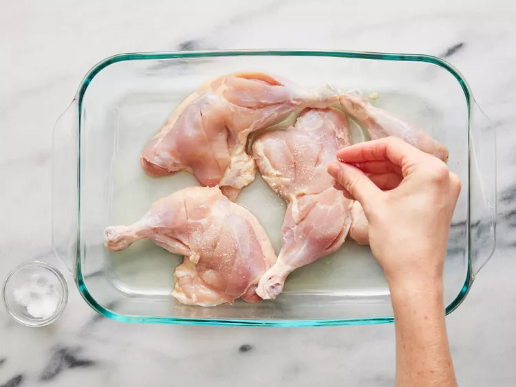

Tandoori Chicken

this authentic tandoori chicken that's marinated in yogurt and spices, then cooked on the grill instead of a
clay oven so you can make it at home. Serve with long-grain basmati rice, grilled veggies, roasted corn on the cob,
and a cucumber salad.
Ingredients
- 2pounds chicken, cute into pieces
- 1 medium lemon,juiced
- 1 teaspoon salt
- 1 and 1/4 cups plain yogurt
- 1/2 medium onion,finely chopped
- 1 clove garlic,minced
- 2 teaspoons garam masala
- 1 teaspoon grated fresh ginger root
- 1 teaspoon cayenne pepper
- 1 teaspoon red food coloring (Optional)
- 1 teaspoon yellow food coloring (Optional)
- 2 teaspoons finely chopped cilantro
- 1 medium lemon,cut into wedges
Instructions
- Gather all ingredients

- Remove and discard skin from chicken pieces. Cut slits into meat and place into
a shallow dish. Season chicken on both sides with lemon juice and salt. Let sit
for 20 minutes.

- Mix yogurt, onion, garlic, garam masala, ginger, and cayenne pepper together in
a medium bowl until smooth, then stir in food coloring.

- Spread yogurt mixture over chicken, cover, and refrigerate for 6 to 24 hours
(the longer the better).
- When ready to cook, preheat an outdoor grill for medium-high heat and lightly
oil the grate. Remove chicken from marinade. Discard remaining marinade.
- Cook chicken on the preheated grill until no longer pink and the juices run
clear. An instant-read thermometer inserted near the bone should read 165
degrees F (74 degrees C).

- Garnish with cilantro and lemon wedges.